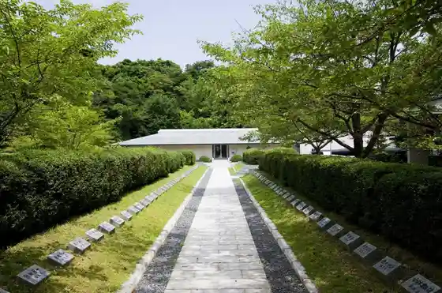
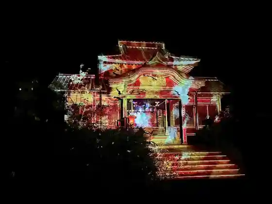
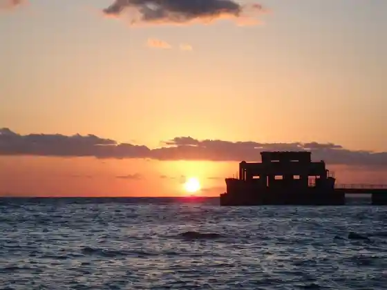

Shunan Kojo Yakei
Shunan, Yamaguchi · 0834-22-8372 · Official / source link
Kaiten Memorial Museum
Shunan, Yamaguchi · 0834-85-2310 · Official / source link

Ka no ’n Koto Seiryu Fes.
Shunan, Yamaguchi · 0834-22-8691 · Official / source link

Otsu Shima
Shunan, Yamaguchi · 0834-22-8372 · Official / source link

Yuno Onsen
Shunan, Yamaguchi · 0834-83-2666 · Official / source link
Shunan Tokuyama Zoo
Shunan, Yamaguchi · 0834-22-8640 · Official / source link
Kanyo Tera (Shosho Hakkei no Niwa) Tokubetsu Kokai to Zazen Experience
Shunan, Yamaguchi · 0834-33-8424 · Official / source link
Roadside Station Sorene Shunan
Shunan, Yamaguchi · 0834-83-3303 · Official / source link
Harumi Shinsui Park
Shunan, Yamaguchi · 0834-22-8372 · Official / source link
Rezonakku Eigen Yama Park (Eigen Yama Park)
Shunan, Yamaguchi · 0834-63-7899 · Official / source link
Kanko Ressha WEST EXPRESS Ginga
Shunan, Yamaguchi · 0570-00-2486 · Official / source link
Kanyo Tera
Shunan, Yamaguchi · 0834-68-2010 · Official / source link
Su Kin Furutsu Land
Shunan, Yamaguchi · 0834-86-2000 · Official / source link
Shunan Bijutsu Museum
Shunan, Yamaguchi · 0834-22-8880 · Official / source link
Yatsushiro no Tsuru Oyobiso no Torai Chi
Shunan, Yamaguchi · 0833-92-0003 · Official / source link
Kaiten Kunren Kichiato
Shunan, Yamaguchi · 0834-22-8622 · Official / source link
Kochi Zu Wo Katate Nimachiwo Aruko U (Tokuyama Hen)
Shunan, Yamaguchi · 0834-22-8691 · Official / source link
Kaiten Memorial Museum Tokubetsuten
Shunan, Yamaguchi · 0834-85-2310 · Official / source link
Shunan Green Park
Shunan, Yamaguchi · 0834-22-8402 · Official / source link
San Oka Yume Plaza (Manabi no Isu)
Shunan, Yamaguchi · 0833-92-0177 · Official / source link
Seseragi Yutaka Shika Sato Park
Shunan, Yamaguchi · 0834-68-1234 · Official / source link
Chon Hora
Shunan, Yamaguchi · 0834-68-2335 · Official / source link
Taika Yama
Shunan, Yamaguchi · 0834-22-8372 · Official / source link
Kawasaki Kannon
Shunan, Yamaguchi · 0834-22-8372 · Official / source link
Kodama Shrine
Shunan, Yamaguchi · Official / source link
Wakayama Castle Ruins
Shunan, Yamaguchi · 0834-22-8677 · Official / source link
Yamazaki Hachiman Shrine
Shunan, Yamaguchi · 083462-2410 · Official / source link
Nagata Beach Seaside Park
Shunan, Yamaguchi · 0834-22-8366 · Official / source link
En Ishi Hachiman Shrine
Shunan, Yamaguchi · 0834-32-8888 · Official / source link
Kuroiwa Kyo
Shunan, Yamaguchi · 0833-92-0014 · Official / source link
Ishifune Onsen Seseragi Yutaka Shika Sato Park
Shunan, Yamaguchi · 0834-68-2542 · Official / source link
Takase San Supotsu Land Campground
Shunan, Yamaguchi · 0834-62-2678 · Official / source link
Takase Kyo
Shunan, Yamaguchi · 0834-22-8372 · Official / source link
Ishifune Onsen
Shunan, Yamaguchi · 0834-68-2542 · Official / source link
Midori to Bunka no Puromunado Sakura Namiki
Shunan, Yamaguchi · 0834-22-8372 · Official / source link
Sanko Tera
Shunan, Yamaguchi · 0833-91-0459 · Official / source link
Jogagaku
Shunan, Yamaguchi · 0834-68-2335 · Official / source link
Seiryu Tori
Shunan, Yamaguchi · 0834-68-2335 · Official / source link
Shunan Kyodo Bijutsu Museum Ozaki Masaki Memorial Museum
Shunan, Yamaguchi · 0834-62-3119 · Official / source link
Takase Mizumi
Shunan, Yamaguchi · 0834-22-8372 · Official / source link
Otsu Shima Fureai Center
Shunan, Yamaguchi · 0834-85-2777 · Official / source link
Terashima Chuzaburo Kanren Historic Site
Shunan, Yamaguchi · 0834-22-8372 · Official / source link
Shinpeigahara Park
Shunan, Yamaguchi · 0834-22-8372 · Official / source link
Shunan Otawara Nature no Ie
Shunan, Yamaguchi · 0834-89-0461 · Official / source link
Ni Tokoro Yamada Shrine
Shunan, Yamaguchi · 0834-68-3860 · Official / source link
Ko Tsuru Onsen
Shunan, Yamaguchi · 0833-91-0457 · Official / source link
Shunan Yasuda no Ito Ayatsuri Ningyo Shibai
Shunan, Yamaguchi · 0833-92-0177 · Official / source link
Nagano Yama Green Park
Shunan, Yamaguchi · 0834-22-8372 · Official / source link
Katsuei Tera Dorui Oyobi Kyu Keidai
Shunan, Yamaguchi · 0834-22-8677 · Official / source link
Otsu Shima Umi no Sato
Shunan, Yamaguchi · 0834-85-2560 · Official / source link
Shunan Kanko Boranteiagaido no Kai
Shunan, Yamaguchi · 0834-33-8424 · Official / source link
Tokuyama Mori Ie Hakasho
Shunan, Yamaguchi · 0834-22-8677 · Official / source link
Mori Motonari Ko Ha Byo
Shunan, Yamaguchi · 0833-92-0254 · Official / source link
Ryubun Tera
Shunan, Yamaguchi · 0834-88-1072 · Official / source link
Otama Sugi (Hiryu Hachiman Shrine)
Shunan, Yamaguchi · 0834-22-8677 · Official / source link
Tokuyama Mori Jinya Ato
Shunan, Yamaguchi · 0834-22-8372 · Official / source link
Yoshida Shoin to Terashima Chuzaburo Ketsubetsu no Chi
Shunan, Yamaguchi · 0834-22-8677 · Official / source link
Shi Kumagagaku Haikingukosu
Shunan, Yamaguchi · 0834-22-8372 · Official / source link
Sakana Setsu Falls
Shunan, Yamaguchi · 0833-92-0014 · Official / source link
Eboshi Gaku Uddo Park
Shunan, Yamaguchi · 0833-92-0014 · Official / source link
Yamada Kahon Ya
Shunan, Yamaguchi · 0834-22-8677 · Official / source link
San Oka Onsen
Shunan, Yamaguchi · 0833-92-0014 · Official / source link
Taiyo Tera
Shunan, Yamaguchi · 0833-91-0204 · Official / source link
Aka Taki
Shunan, Yamaguchi · 0834-68-2335 · Official / source link
Kano Tenjin Yama Park
Shunan, Yamaguchi · 0834-68-2335 · Official / source link
Kanno Mizumi
Shunan, Yamaguchi · 0834-22-8372 · Official / source link
to no Michi Wakayama Shiro Tojo no Michi
Shunan, Yamaguchi · 0834-63-1983 · Official / source link
Mitake
Shunan, Yamaguchi · 0834-22-8372 · Official / source link
Wakayama Park
Shunan, Yamaguchi · 0834-61-4108 · Official / source link
Yuno Kannon Gaku Haikingukosu
Shunan, Yamaguchi · 0834-83-2002 · Official / source link
Ryuun Tera
Shunan, Yamaguchi · 0834-68-2132 · Official / source link
Danjo Itozakura
Shunan, Yamaguchi · 0834-68-2335 · Official / source link
Kuni Toroku Yukei Bunkazai Kyu City Cho Kosha
Shunan, Yamaguchi · 0834-22-8281 · Official / source link
Masuda Oya Shi Yuhei Tamamono Tsurugi Yuki Chi
Shunan, Yamaguchi · 0834-22-8372 · Official / source link
Shikinai Odori
Shunan, Yamaguchi · 0834-22-8677 · Official / source link
Ishigagaku
Shunan, Yamaguchi · 0834-68-2334 · Official / source link
Sengoku Gaku
Shunan, Yamaguchi · 0834-22-8372 · Official / source link
Yobisaka Shukueki Honjin Ato
Shunan, Yamaguchi · 0833-92-0254 · Official / source link
Kuniji Oya So Yuhei Tamamono Tsurugi Yuki Chi
Shunan, Yamaguchi · 0834-22-8372 · Official / source link
Dakeyama
Shunan, Yamaguchi · 0834-61-4108 · Official / source link
Niiho Tsu Kagura
Shunan, Yamaguchi · 0834-68-2332 · Official / source link
Shi Kumagagaku
Shunan, Yamaguchi · 0834-22-8372 · Official / source link
Yamazaki Taishi no Hakasho
Shunan, Yamaguchi · 0834-22-8677 · Official / source link
Ju Yama
Shunan, Yamaguchi · 0834-22-8677 · Official / source link
Fukukawa Honjin Ato
Shunan, Yamaguchi · 0834-22-8622 · Official / source link
Taiyo Tera Garden
Shunan, Yamaguchi · 0833-91-0204 · Official / source link
Go Kyo to Riku Tokoro
Shunan, Yamaguchi · 0834-22-8372 · Official / source link
Majima Yasohachigatokoro Meguri
Shunan, Yamaguchi · 0834-22-8372 · Official / source link
Heike Odori
Shunan, Yamaguchi · 0834-22-8677 · Official / source link
Ogauchi Kagura
Shunan, Yamaguchi · 0834-68-2332 · Official / source link
San Sakugami Raku
Shunan, Yamaguchi · Official / source link
Tenjin Yama Park / Sasayuri
Shunan, Yamaguchi · 0834-68-2335 · Official / source link
Sansa Odori
Shunan, Yamaguchi · 0834-22-8677 · Official / source link
Kanematsu Sakura
Shunan, Yamaguchi · 0834-68-2335 · Official / source link
Kubo Kagura
Shunan, Yamaguchi · 0834-22-8677 · Official / source link
Daigara Odori
Shunan, Yamaguchi · 0834-22-8677 · Official / source link
Ko Michi Mizumi
Shunan, Yamaguchi · 0834-22-8372 · Official / source link
Yu Tsuru Chi (Tsuru no Haka)
Shunan, Yamaguchi · 0833-92-0003 · Official / source link
Sugi Moto So Fushi no Hakasho
Shunan, Yamaguchi · 0834-22-8622 · Official / source link
Nishikawa Uchigami Raku
Shunan, Yamaguchi · 0834-68-2332 · Official / source link
Shinhata Kamimai
Shunan, Yamaguchi · 0833-92-0002 · Official / source link
Cho Ho Nembutsu Yo
Shunan, Yamaguchi · 0834-22-8677 · Official / source link
Wakayama
Shunan, Yamaguchi · 0834-22-8372 · Official / source link
Kami Odori
Shunan, Yamaguchi · 0834-22-8677 · Official / source link
Sadamasa Tera
Shunan, Yamaguchi · 0833-91-0883 · Official / source link
Fukuhara Moto Hei Yuki Chi
Shunan, Yamaguchi · 0834-22-8372 · Official / source link
Tsutsumi Ku Yado Nyu Yatsu
Shunan, Yamaguchi · 0834-68-2332 · Official / source link
Daido Ri Kominkan Shuhen / Hotaru
Shunan, Yamaguchi · 0834-22-8372 · Official / source link
Rei Michi Tsue Odori
Shunan, Yamaguchi · 0834-22-8677 · Official / source link
Yoshino O no Kuzushi Odori
Shunan, Yamaguchi · 0834-68-2332 · Official / source link
Burari Yuno Onsen Haikingukosu
Shunan, Yamaguchi · 0834-83-2002 · Official / source link
Yagen Tani Ichiri Tsuka
Shunan, Yamaguchi · 0834-22-8622 · Official / source link
Terashima Chuzaburo Tanjo no Chi
Shunan, Yamaguchi · 0834-22-8677 · Official / source link
Kan Tsuzumi Yo
Shunan, Yamaguchi · 0834-22-8677 · Official / source link
Nagamochiuta
Shunan, Yamaguchi · 0834-22-8677 · Official / source link
Teodori Ri
Shunan, Yamaguchi · 0834-22-8677 · Official / source link
Karyu Yo
Shunan, Yamaguchi · 0833-92-0003 · Official / source link
Shunan Yakusho
Shunan, Yamaguchi · 0834-22-8211 · Official / source link